Industry benchmarks · Volume VI of VI · 109 entries · 542–650
Worlds & wonders.
Sandboxes, volumetric light and the far end of the example shelf. Six volumes, 650 benchmark entries, one catalog. Every card opens a page held in this repository: a rendered three.js example, a local project demo, the three.js source room, or a source dossier.
Volume VI
109 entries · Sandboxes, volumetric light and the far end of the example shelf.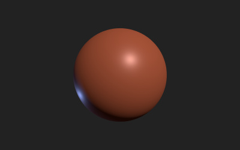
542WebGPU Sculpt
Official three.js example “WebGPU Sculpt”. The plate is its rendered screenshot; the card opens the same runnable page from this repository.
mrdoob/three.js · examples/webgpu_sculpt.htmlWebGPU Shadertoy
Official three.js example “WebGPU Shadertoy”. The plate is its rendered screenshot; the card opens the same runnable page from this repository.
mrdoob/three.js · examples/webgpu_shadertoy.html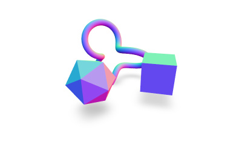
544WebGPU Shadow Contact
Official three.js example “WebGPU Shadow Contact”. The plate is its rendered screenshot; the card opens the same runnable page from this repository.
mrdoob/three.js · examples/webgpu_shadow_contact.html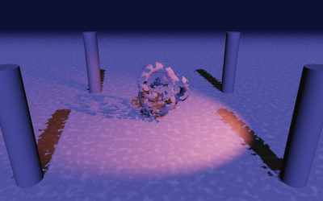
545WebGPU Shadowmap
Official three.js example “WebGPU Shadowmap”. The plate is its rendered screenshot; the card opens the same runnable page from this repository.
mrdoob/three.js · examples/webgpu_shadowmap.html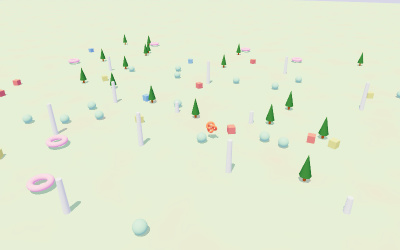
546WebGPU Shadowmap Array
Official three.js example “WebGPU Shadowmap Array”. The plate is its rendered screenshot; the card opens the same runnable page from this repository.
mrdoob/three.js · examples/webgpu_shadowmap_array.html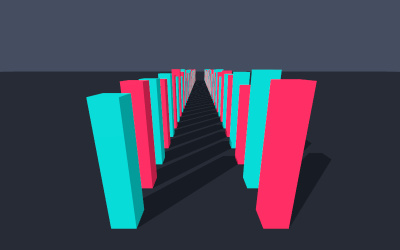
547WebGPU Shadowmap Csm
Official three.js example “WebGPU Shadowmap Csm”. The plate is its rendered screenshot; the card opens the same runnable page from this repository.
mrdoob/three.js · examples/webgpu_shadowmap_csm.html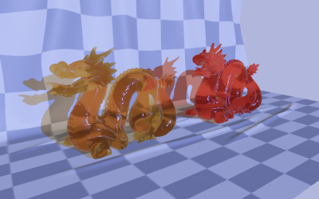
548WebGPU Shadowmap Opacity
Official three.js example “WebGPU Shadowmap Opacity”. The plate is its rendered screenshot; the card opens the same runnable page from this repository.
mrdoob/three.js · examples/webgpu_shadowmap_opacity.html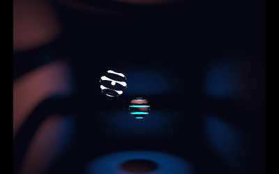
549WebGPU Shadowmap Pointlight
Official three.js example “WebGPU Shadowmap Pointlight”. The plate is its rendered screenshot; the card opens the same runnable page from this repository.
mrdoob/three.js · examples/webgpu_shadowmap_pointlight.html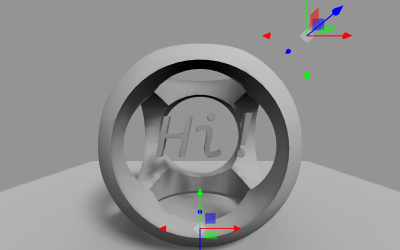
550WebGPU Shadowmap Progressive
Official three.js example “WebGPU Shadowmap Progressive”. The plate is its rendered screenshot; the card opens the same runnable page from this repository.
mrdoob/three.js · examples/webgpu_shadowmap_progressive.html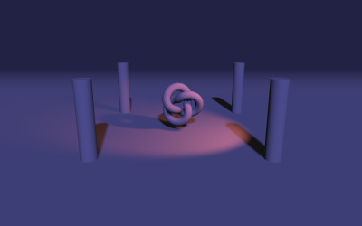
551WebGPU Shadowmap Vsm
Official three.js example “WebGPU Shadowmap Vsm”. The plate is its rendered screenshot; the card opens the same runnable page from this repository.
mrdoob/three.js · examples/webgpu_shadowmap_vsm.html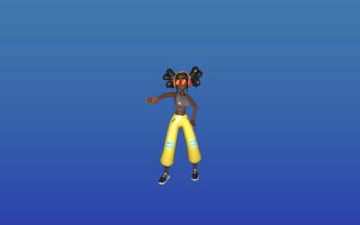
552WebGPU Skinning
Official three.js example “WebGPU Skinning”. The plate is its rendered screenshot; the card opens the same runnable page from this repository.
mrdoob/three.js · examples/webgpu_skinning.html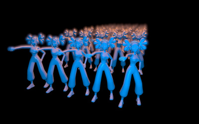
553WebGPU Skinning Instancing
Official three.js example “WebGPU Skinning Instancing”. The plate is its rendered screenshot; the card opens the same runnable page from this repository.
mrdoob/three.js · examples/webgpu_skinning_instancing.html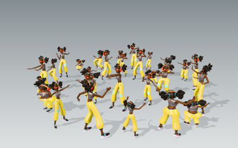
554WebGPU Skinning Instancing Individual
Official three.js example “WebGPU Skinning Instancing Individual”. The plate is its rendered screenshot; the card opens the same runnable page from this repository.
mrdoob/three.js · examples/webgpu_skinning_instancing_individual.htmlWebGPU Skinning Points
Official three.js example “WebGPU Skinning Points”. The plate is its rendered screenshot; the card opens the same runnable page from this repository.
mrdoob/three.js · examples/webgpu_skinning_points.htmlWebGPU Sky
Official three.js example “WebGPU Sky”. The plate is its rendered screenshot; the card opens the same runnable page from this repository.
mrdoob/three.js · examples/webgpu_sky.html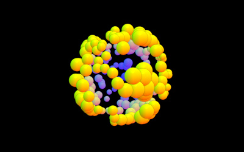
557WebGPU Sprites
Official three.js example “WebGPU Sprites”. The plate is its rendered screenshot; the card opens the same runnable page from this repository.
mrdoob/three.js · examples/webgpu_sprites.html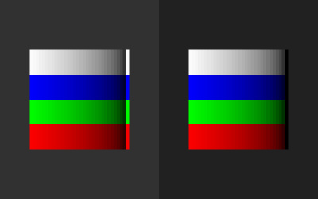
558WebGPU Storage Buffer
Official three.js example “WebGPU Storage Buffer”. The plate is its rendered screenshot; the card opens the same runnable page from this repository.
mrdoob/three.js · examples/webgpu_storage_buffer.htmlWebGPU Struct Drawindirect
Official three.js example “WebGPU Struct Drawindirect”. The plate is its rendered screenshot; the card opens the same runnable page from this repository.
mrdoob/three.js · examples/webgpu_struct_drawindirect.html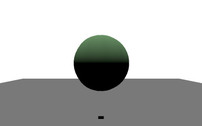
560WebGPU Test Memory
Official three.js example “WebGPU Test Memory”. The plate is its rendered screenshot; the card opens the same runnable page from this repository.
mrdoob/three.js · examples/webgpu_test_memory.html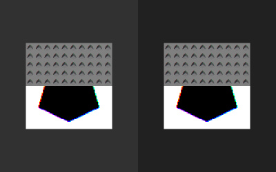
561WebGPU Texturegather
Official three.js example “WebGPU Texturegather”. The plate is its rendered screenshot; the card opens the same runnable page from this repository.
mrdoob/three.js · examples/webgpu_texturegather.html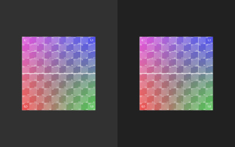
562WebGPU Texturegrad
Official three.js example “WebGPU Texturegrad”. The plate is its rendered screenshot; the card opens the same runnable page from this repository.
mrdoob/three.js · examples/webgpu_texturegrad.htmlWebGPU Textures 2d-array
Official three.js example “WebGPU Textures 2d-array”. The plate is its rendered screenshot; the card opens the same runnable page from this repository.
mrdoob/three.js · examples/webgpu_textures_2d-array.htmlWebGPU Textures 2d-array Compressed
Official three.js example “WebGPU Textures 2d-array Compressed”. The plate is its rendered screenshot; the card opens the same runnable page from this repository.
mrdoob/three.js · examples/webgpu_textures_2d-array_compressed.html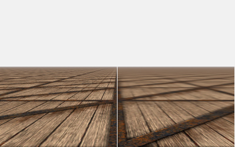
565WebGPU Textures Anisotropy
Official three.js example “WebGPU Textures Anisotropy”. The plate is its rendered screenshot; the card opens the same runnable page from this repository.
mrdoob/three.js · examples/webgpu_textures_anisotropy.html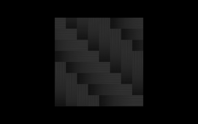
566WebGPU Textures Partialupdate
Official three.js example “WebGPU Textures Partialupdate”. The plate is its rendered screenshot; the card opens the same runnable page from this repository.
mrdoob/three.js · examples/webgpu_textures_partialupdate.htmlWebGPU Tonemapping
Official three.js example “WebGPU Tonemapping”. The plate is its rendered screenshot; the card opens the same runnable page from this repository.
mrdoob/three.js · examples/webgpu_tonemapping.html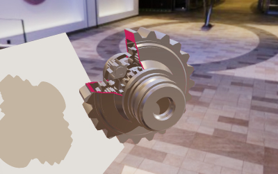
568WebGPU TSL Angular Slicing
Official three.js example “WebGPU TSL Angular Slicing”. The plate is its rendered screenshot; the card opens the same runnable page from this repository.
mrdoob/three.js · examples/webgpu_tsl_angular_slicing.html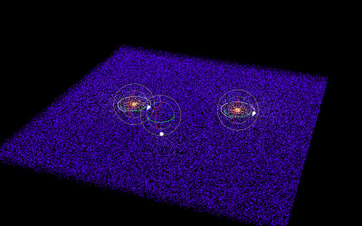
569WebGPU TSL Compute Attractors Particles
Official three.js example “WebGPU TSL Compute Attractors Particles”. The plate is its rendered screenshot; the card opens the same runnable page from this repository.
mrdoob/three.js · examples/webgpu_tsl_compute_attractors_particles.html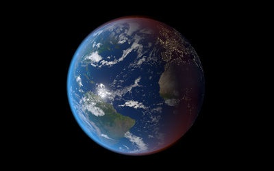
570WebGPU TSL Earth
Official three.js example “WebGPU TSL Earth”. The plate is its rendered screenshot; the card opens the same runnable page from this repository.
mrdoob/three.js · examples/webgpu_tsl_earth.html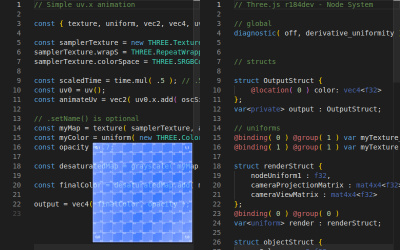
571WebGPU TSL Editor
Official three.js example “WebGPU TSL Editor”. The plate is its rendered screenshot; the card opens the same runnable page from this repository.
mrdoob/three.js · examples/webgpu_tsl_editor.html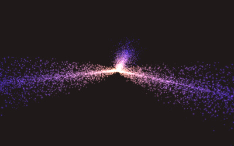
572WebGPU TSL Galaxy
Official three.js example “WebGPU TSL Galaxy”. The plate is its rendered screenshot; the card opens the same runnable page from this repository.
mrdoob/three.js · examples/webgpu_tsl_galaxy.html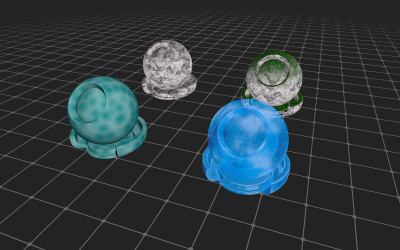
573WebGPU TSL Graph
Official three.js example “WebGPU TSL Graph”. The plate is its rendered screenshot; the card opens the same runnable page from this repository.
mrdoob/three.js · examples/webgpu_tsl_graph.html 574
574
WebGPU TSL Halftone
Official three.js example “WebGPU TSL Halftone”. The plate is its rendered screenshot; the card opens the same runnable page from this repository.
mrdoob/three.js · examples/webgpu_tsl_halftone.html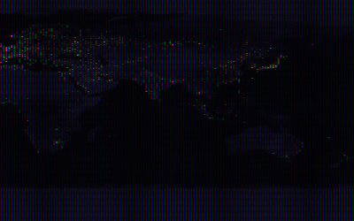
575WebGPU TSL Interoperability
Official three.js example “WebGPU TSL Interoperability”. The plate is its rendered screenshot; the card opens the same runnable page from this repository.
mrdoob/three.js · examples/webgpu_tsl_interoperability.html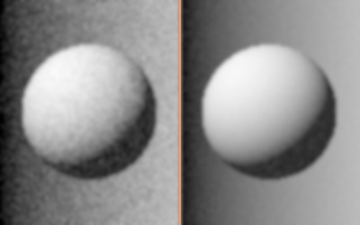
576WebGPU TSL Noise Smoothing
Official three.js example “WebGPU TSL Noise Smoothing”. The plate is its rendered screenshot; the card opens the same runnable page from this repository.
mrdoob/three.js · examples/webgpu_tsl_noise_smoothing.html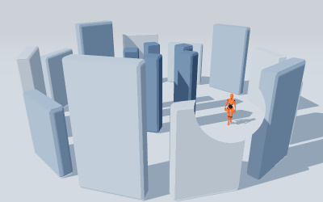
577WebGPU TSL Occlusion Dither
Official three.js example “WebGPU TSL Occlusion Dither”. The plate is its rendered screenshot; the card opens the same runnable page from this repository.
mrdoob/three.js · examples/webgpu_tsl_occlusion_dither.html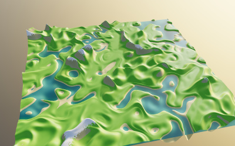
578WebGPU TSL Procedural Terrain
Official three.js example “WebGPU TSL Procedural Terrain”. The plate is its rendered screenshot; the card opens the same runnable page from this repository.
mrdoob/three.js · examples/webgpu_tsl_procedural_terrain.html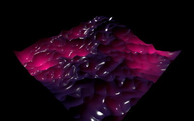
579WebGPU TSL Raging Sea
Official three.js example “WebGPU TSL Raging Sea”. The plate is its rendered screenshot; the card opens the same runnable page from this repository.
mrdoob/three.js · examples/webgpu_tsl_raging_sea.html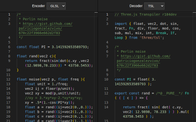
580WebGPU TSL Transpiler
Official three.js example “WebGPU TSL Transpiler”. The plate is its rendered screenshot; the card opens the same runnable page from this repository.
mrdoob/three.js · examples/webgpu_tsl_transpiler.html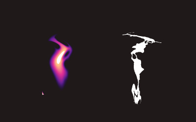
581WebGPU TSL Vfx Flames
Official three.js example “WebGPU TSL Vfx Flames”. The plate is its rendered screenshot; the card opens the same runnable page from this repository.
mrdoob/three.js · examples/webgpu_tsl_vfx_flames.htmlWebGPU TSL Vfx Linkedparticles
Official three.js example “WebGPU TSL Vfx Linkedparticles”. The plate is its rendered screenshot; the card opens the same runnable page from this repository.
mrdoob/three.js · examples/webgpu_tsl_vfx_linkedparticles.htmlWebGPU TSL Vfx Tornado
Official three.js example “WebGPU TSL Vfx Tornado”. The plate is its rendered screenshot; the card opens the same runnable page from this repository.
mrdoob/three.js · examples/webgpu_tsl_vfx_tornado.html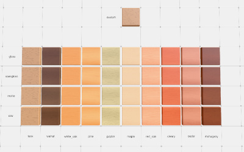
584WebGPU TSL Wood
Official three.js example “WebGPU TSL Wood”. The plate is its rendered screenshot; the card opens the same runnable page from this repository.
mrdoob/three.js · examples/webgpu_tsl_wood.html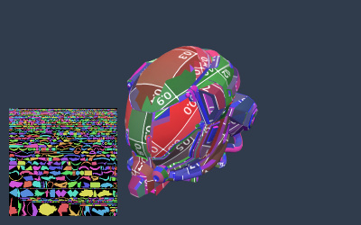
585WebGPU Unwrap
Official three.js example “WebGPU Unwrap”. The plate is its rendered screenshot; the card opens the same runnable page from this repository.
mrdoob/three.js · examples/webgpu_unwrap.html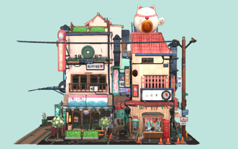
586WebGPU Upscaling Fsr1
Official three.js example “WebGPU Upscaling Fsr1”. The plate is its rendered screenshot; the card opens the same runnable page from this repository.
mrdoob/three.js · examples/webgpu_upscaling_fsr1.html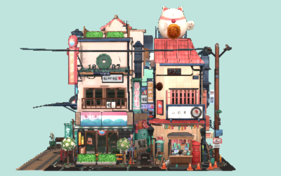
587WebGPU Upscaling Taau
Official three.js example “WebGPU Upscaling Taau”. The plate is its rendered screenshot; the card opens the same runnable page from this repository.
mrdoob/three.js · examples/webgpu_upscaling_taau.html 588
588
WebGPU Video Frame
Official three.js example “WebGPU Video Frame”. The plate is its rendered screenshot; the card opens the same runnable page from this repository.
mrdoob/three.js · examples/webgpu_video_frame.htmlWebGPU Video Panorama
Official three.js example “WebGPU Video Panorama”. The plate is its rendered screenshot; the card opens the same runnable page from this repository.
mrdoob/three.js · examples/webgpu_video_panorama.htmlWebGPU Volume Caustics
Official three.js example “WebGPU Volume Caustics”. The plate is its rendered screenshot; the card opens the same runnable page from this repository.
mrdoob/three.js · examples/webgpu_volume_caustics.html 591
591
WebGPU Volume Cloud
Official three.js example “WebGPU Volume Cloud”. The plate is its rendered screenshot; the card opens the same runnable page from this repository.
mrdoob/three.js · examples/webgpu_volume_cloud.html 592
592
WebGPU Volume Fire
Official three.js example “WebGPU Volume Fire”. The plate is its rendered screenshot; the card opens the same runnable page from this repository.
mrdoob/three.js · examples/webgpu_volume_fire.html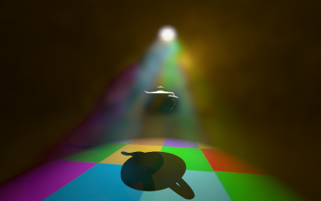
593WebGPU Volume Lighting
Official three.js example “WebGPU Volume Lighting”. The plate is its rendered screenshot; the card opens the same runnable page from this repository.
mrdoob/three.js · examples/webgpu_volume_lighting.html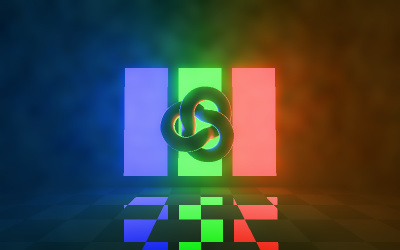
594WebGPU Volume Lighting Rectarea
Official three.js example “WebGPU Volume Lighting Rectarea”. The plate is its rendered screenshot; the card opens the same runnable page from this repository.
mrdoob/three.js · examples/webgpu_volume_lighting_rectarea.html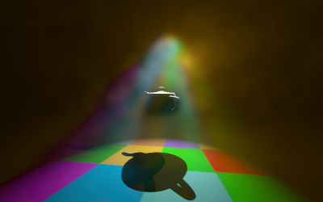
595WebGPU Volume Lighting Traa
Official three.js example “WebGPU Volume Lighting Traa”. The plate is its rendered screenshot; the card opens the same runnable page from this repository.
mrdoob/three.js · examples/webgpu_volume_lighting_traa.html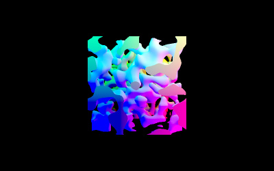
596WebGPU Volume Perlin
Official three.js example “WebGPU Volume Perlin”. The plate is its rendered screenshot; the card opens the same runnable page from this repository.
mrdoob/three.js · examples/webgpu_volume_perlin.html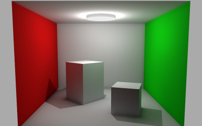
597WebGPU Vxgi
Official three.js example “WebGPU Vxgi”. The plate is its rendered screenshot; the card opens the same runnable page from this repository.
mrdoob/three.js · examples/webgpu_vxgi.html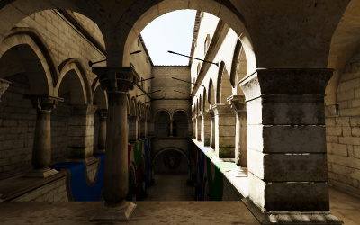
598WebGPU Vxgi Sponza
Official three.js example “WebGPU Vxgi Sponza”. The plate is its rendered screenshot; the card opens the same runnable page from this repository.
mrdoob/three.js · examples/webgpu_vxgi_sponza.html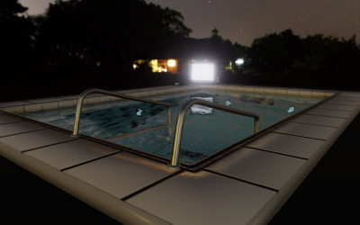
599WebGPU Water
Official three.js example “WebGPU Water”. The plate is its rendered screenshot; the card opens the same runnable page from this repository.
mrdoob/three.js · examples/webgpu_water.html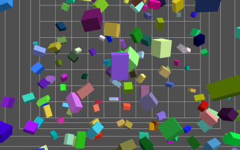
600WebGPU XR Cubes
Official three.js example “WebGPU XR Cubes”. The plate is its rendered screenshot; the card opens the same runnable page from this repository.
mrdoob/three.js · examples/webgpu_xr_cubes.html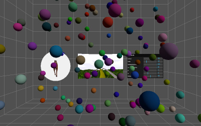
601WebGPU XR Native Layers
Official three.js example “WebGPU XR Native Layers”. The plate is its rendered screenshot; the card opens the same runnable page from this repository.
mrdoob/three.js · examples/webgpu_xr_native_layers.html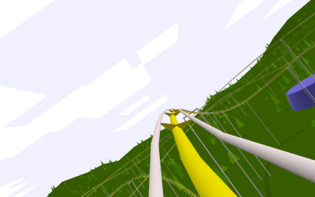
602WebGPU XR Rollercoaster
Official three.js example “WebGPU XR Rollercoaster”. The plate is its rendered screenshot; the card opens the same runnable page from this repository.
mrdoob/three.js · examples/webgpu_xr_rollercoaster.html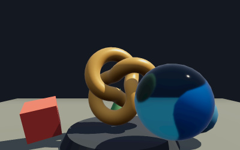
603WebGPU XR Shadows
Official three.js example “WebGPU XR Shadows”. The plate is its rendered screenshot; the card opens the same runnable page from this repository.
mrdoob/three.js · examples/webgpu_xr_shadows.html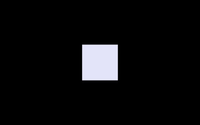
604Webxr AR Camera Access
Official three.js example “Webxr AR Camera Access”. The plate is its rendered screenshot; the card opens the same runnable page from this repository.
mrdoob/three.js · examples/webxr_ar_camera_access.html 605
605
Webxr AR Cones
Official three.js example “Webxr AR Cones”. The plate is its rendered screenshot; the card opens the same runnable page from this repository.
mrdoob/three.js · examples/webxr_ar_cones.htmlWebxr AR Hittest
Official three.js example “Webxr AR Hittest”. The plate is its rendered screenshot; the card opens the same runnable page from this repository.
mrdoob/three.js · examples/webxr_ar_hittest.html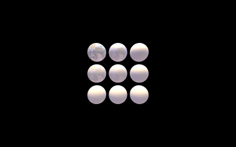
607Webxr AR Lighting
Official three.js example “Webxr AR Lighting”. The plate is its rendered screenshot; the card opens the same runnable page from this repository.
mrdoob/three.js · examples/webxr_ar_lighting.html 608
608
Webxr AR Plane Detection
Official three.js example “Webxr AR Plane Detection”. The plate is its rendered screenshot; the card opens the same runnable page from this repository.
mrdoob/three.js · examples/webxr_ar_plane_detection.html 609
609
Webxr VR Handinput
Official three.js example “Webxr VR Handinput”. The plate is its rendered screenshot; the card opens the same runnable page from this repository.
mrdoob/three.js · examples/webxr_vr_handinput.htmlWebxr VR Handinput Cubes
Official three.js example “Webxr VR Handinput Cubes”. The plate is its rendered screenshot; the card opens the same runnable page from this repository.
mrdoob/three.js · examples/webxr_vr_handinput_cubes.html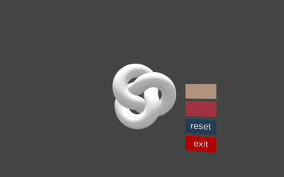
611Webxr VR Handinput Pointerclick
Official three.js example “Webxr VR Handinput Pointerclick”. The plate is its rendered screenshot; the card opens the same runnable page from this repository.
mrdoob/three.js · examples/webxr_vr_handinput_pointerclick.htmlWebxr VR Handinput Pointerdrag
Official three.js example “Webxr VR Handinput Pointerdrag”. The plate is its rendered screenshot; the card opens the same runnable page from this repository.
mrdoob/three.js · examples/webxr_vr_handinput_pointerdrag.htmlWebxr VR Handinput Pressbutton
Official three.js example “Webxr VR Handinput Pressbutton”. The plate is its rendered screenshot; the card opens the same runnable page from this repository.
mrdoob/three.js · examples/webxr_vr_handinput_pressbutton.html 614
614
Webxr VR Handinput Profiles
Official three.js example “Webxr VR Handinput Profiles”. The plate is its rendered screenshot; the card opens the same runnable page from this repository.
mrdoob/three.js · examples/webxr_vr_handinput_profiles.htmlWebxr VR Layers
Official three.js example “Webxr VR Layers”. The plate is its rendered screenshot; the card opens the same runnable page from this repository.
mrdoob/three.js · examples/webxr_vr_layers.htmlWebxr VR Panorama
Official three.js example “Webxr VR Panorama”. The plate is its rendered screenshot; the card opens the same runnable page from this repository.
mrdoob/three.js · examples/webxr_vr_panorama.htmlWebxr VR Panorama Depth
Official three.js example “Webxr VR Panorama Depth”. The plate is its rendered screenshot; the card opens the same runnable page from this repository.
mrdoob/three.js · examples/webxr_vr_panorama_depth.html 618
618
Webxr VR Rollercoaster
Official three.js example “Webxr VR Rollercoaster”. The plate is its rendered screenshot; the card opens the same runnable page from this repository.
mrdoob/three.js · examples/webxr_vr_rollercoaster.htmlWebxr VR Sandbox
Official three.js example “Webxr VR Sandbox”. The plate is its rendered screenshot; the card opens the same runnable page from this repository.
mrdoob/three.js · examples/webxr_vr_sandbox.htmlWebxr VR Teleport
Official three.js example “Webxr VR Teleport”. The plate is its rendered screenshot; the card opens the same runnable page from this repository.
mrdoob/three.js · examples/webxr_vr_teleport.htmlWebxr VR Video
Official three.js example “Webxr VR Video”. The plate is its rendered screenshot; the card opens the same runnable page from this repository.
mrdoob/three.js · examples/webxr_vr_video.htmlWebxr XR Ballshooter
Official three.js example “Webxr XR Ballshooter”. The plate is its rendered screenshot; the card opens the same runnable page from this repository.
mrdoob/three.js · examples/webxr_xr_ballshooter.htmlWebxr XR Controls Transform
Official three.js example “Webxr XR Controls Transform”. The plate is its rendered screenshot; the card opens the same runnable page from this repository.
mrdoob/three.js · examples/webxr_xr_controls_transform.htmlWebxr XR Cubes
Official three.js example “Webxr XR Cubes”. The plate is its rendered screenshot; the card opens the same runnable page from this repository.
mrdoob/three.js · examples/webxr_xr_cubes.htmlWebxr XR Dragging
Official three.js example “Webxr XR Dragging”. The plate is its rendered screenshot; the card opens the same runnable page from this repository.
mrdoob/three.js · examples/webxr_xr_dragging.htmlWebxr XR Dragging Custom Depth
Official three.js example “Webxr XR Dragging Custom Depth”. The plate is its rendered screenshot; the card opens the same runnable page from this repository.
mrdoob/three.js · examples/webxr_xr_dragging_custom_depth.htmlWebxr XR Haptics
Official three.js example “Webxr XR Haptics”. The plate is its rendered screenshot; the card opens the same runnable page from this repository.
mrdoob/three.js · examples/webxr_xr_haptics.htmlWebxr XR Marchingcubes
Official three.js example “Webxr XR Marchingcubes”. The plate is its rendered screenshot; the card opens the same runnable page from this repository.
mrdoob/three.js · examples/webxr_xr_marchingcubes.html 629
629
Webxr XR Paint
Official three.js example “Webxr XR Paint”. The plate is its rendered screenshot; the card opens the same runnable page from this repository.
mrdoob/three.js · examples/webxr_xr_paint.html 630
630
Webxr XR Sculpt
Official three.js example “Webxr XR Sculpt”. The plate is its rendered screenshot; the card opens the same runnable page from this repository.
mrdoob/three.js · examples/webxr_xr_sculpt.htmlPaint
A local rendered project from dli/paint, served from this room's vendored source. “Paint” opens its runnable page, not an upstream copy.
dli/paintLightgl.js
A repository record from evanw/lightgl.js. This card opens a local source dossier with the vendored README and file list, not an upstream page.
evanw/lightgl.jsLightgl.js
A repository record from evanw/lightgl.js. This card opens a local source dossier with the vendored README and file list, not an upstream page.
evanw/lightgl.jsMachine Learning
A repository record from CodingTrain/Machine-Learning. This card opens a local source dossier with the vendored README and file list, not an upstream page.
CodingTrain/Machine-LearningCSS Minecraft
A local rendered project from BenjaminAster/CSS-Minecraft, served from this room's vendored source. “CSS Minecraft” opens its runnable page, not an upstream copy.
BenjaminAster/CSS-MinecraftClock
A local rendered project from saharan/works, served from this room's vendored source. “Clock” opens its runnable page, not an upstream copy.
saharan/worksLife Universe
A local rendered project from saharan/works, served from this room's vendored source. “Life Universe” opens its runnable page, not an upstream copy.
saharan/worksBubbles
A local rendered project from saharan/works, served from this room's vendored source. “Bubbles” opens its runnable page, not an upstream copy.
saharan/worksMarimo
A local rendered project from saharan/works, served from this room's vendored source. “Marimo” opens its runnable page, not an upstream copy.
saharan/worksDrops
A local rendered project from saharan/works, served from this room's vendored source. “Drops” opens its runnable page, not an upstream copy.
saharan/worksWater
A local rendered project from saharan/works, served from this room's vendored source. “Water” opens its runnable page, not an upstream copy.
saharan/worksKhronos Dev Tools
A repository record from KhronosGroup/WebGLDeveloperTools. This card opens a local source dossier with the vendored README and file list, not an upstream page.
KhronosGroup/WebGLDeveloperToolsglTF
A repository record from KhronosGroup/glTF. This card opens a local source dossier with the vendored README and file list, not an upstream page.
KhronosGroup/glTFThree.js
The three.js engine itself. This card opens a local three.js source room with a rendered scene and the build/src entry points.
mrdoob/three.jsSlop New York
A local rendered project from mrdoob/slop-newyork, served from this room's vendored source. “Slop New York” opens its runnable page, not an upstream copy.
mrdoob/slop-newyorkFold
A local rendered project from mrdoob/codevember-2026, served from this room's vendored source. “Fold” opens its runnable page, not an upstream copy.
mrdoob/codevember-2026Moss
A local rendered project from mrdoob/codevember-2026, served from this room's vendored source. “Moss” opens its runnable page, not an upstream copy.
mrdoob/codevember-2026Caustic
A local rendered project from mrdoob/codevember-2026, served from this room's vendored source. “Caustic” opens its runnable page, not an upstream copy.
mrdoob/codevember-2026Spore
A local rendered project from mrdoob/codevember-2026, served from this room's vendored source. “Spore” opens its runnable page, not an upstream copy.
mrdoob/codevember-2026Tangle
A local rendered project from mrdoob/codevember-2026, served from this room's vendored source. “Tangle” opens its runnable page, not an upstream copy.
mrdoob/codevember-2026Nothing in this volume matches that. Try a shorter word.